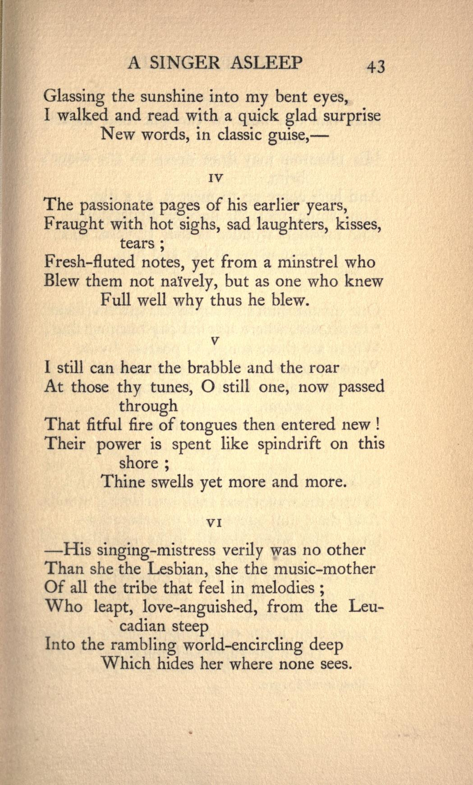
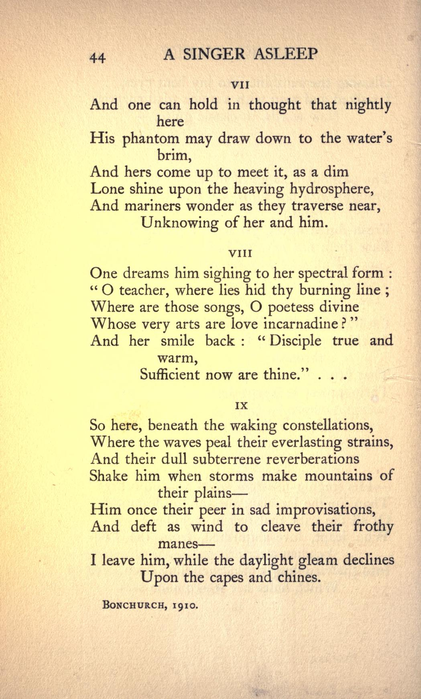

A Singer Asleep
(Algernon Charles Swinburne, 1837-1909)
I
In this fair niche above the
unslumbering sea,
That sentrys up and down all night,
all day,
From cove to promontory, from ness to
bay,
The Fates have fitly bidden that he
should be
Pillowed eternally.
II
—It was as though a garland of red
roses
Had fallen about the hood of some
smug nun
When irresponsibly dropped as from
the sun,
In fulth of numbers freaked with
musical closes,
Upon Victoria's formal middle
time
His leaves of rhythm and rhyme.
III
O that far morning of a summer
day
When, down a terraced street whose
pavements lay
page: 43 
Glassing the sunshine into my bent
eyes,
I walked and read with a quick glad
surprise
New words, in classic guise,—
IV
The passionate pages of his earlier
years,
Fraught with hot sighs, sad
laughters, kisses, tears;
Fresh-fluted notes, yet from a
minstrel who
Blew them not naively, but as one who
knew
Full well why thus he blew.
V
I still can hear the brabble and the
roar
At those thy tunes, O still one, now
passed through
That fitful fire of tongues then
entered new!
Their power is spent like spindrift
on this shore;
Thine swells yet more and more.
VI
—His singing-mistress verily was no
other
Than she the Lesbian, she the
music-mother
Of all the tribe that feel in
melodies;
Who leapt, love-anguished, from the
Leucadian steep
Into the rambling world-encircling
deep
Which hides her where none sees.
page: 44 
VII
And one can hold in thought that
nightly here
His phantom may draw down to the
water’s brim,
And hers come up to meet it, as a
dim
Lone shine upon the heaving
hydrosphere,
And mariners wonder as they traverse
near,
Unknowing of her and him.
VIII
One dreams him sighing to her
spectral form:
“O teacher, where lies hid thy
burning line;
Where are those songs, O poetess
divine
Whose very arts are love
incarnadine?”
And her smile back: “Disciple true
and warm,
Sufficient now are thine.” …
IX
So here, beneath the waking
constellations,
Where the waves peal their
everlasting strains,
And their dull subterrene
reverberations
Shake him when storms make mountains
of their plains—
Him once their peer in sad
improvisations,
And deft as wind to cleave their
frothy manes—
I leave him, while the daylight gleam
declines
Upon the capes and chines.
Bonchurch, 1910.